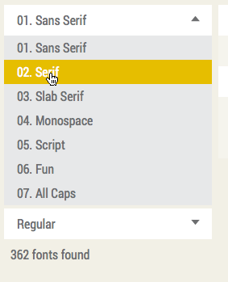
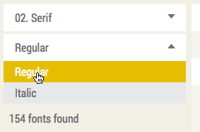
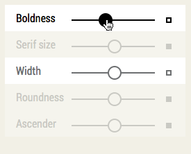
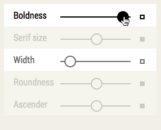
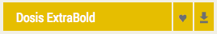
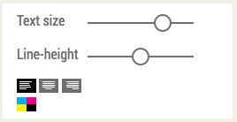
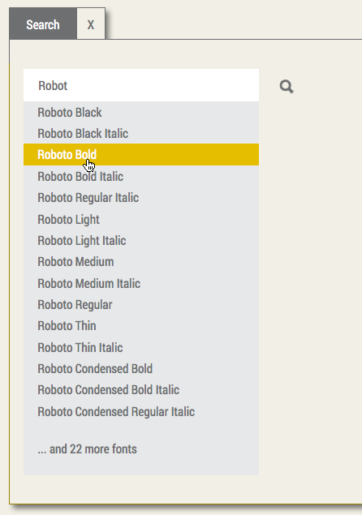

	<div id="content">
		<div id="classification">
		    <h1>1. Mode</h1>
		    In the upper menu you can choose between a few different modes, which will change the size and orientation of your working sheet.<br>
		    If you just want to to see what a font looks like, you stay in the <b>Specimen mode</b>.<br><br>
		    To see how a combination of fonts looks like, try <b>Poster mode</b> or <b>Business card</b> mode.<br>
		    In the following we will use Specimen mode for the explanation.<br><br><br><br>
		    
		    <h1>2. Font category and font style</h1>
		    In the first column you can choose your font category, e.g. "Sans serif". The results displayed will be only fonts in that category. If you need explanation,  you can read more about classification <a href="classification.php">here</a>.<br><br>
		    After that, you can choose if you want to display "regular" or "italic" fonts.
		    <br><br>
		    <br><br><br><br><br><br>
		    
		    
		    <h1>3. Searching by adjusting the properties</h1>
		    In the second column you can specify the appearance of the font. If you are searching for a very bold, thick font, you drag the slider labeled "boldness" completely to the right. And of course the same goes for the other properties.
		    <br><br>
		    <br><br>
		    The properties probably speak for themselves, except the term "Ascender" might confuse some people. Ascender is the length of the sticks on letters like "h", "b", "d", etc.<br>
		    A serif is the thingy, sort of feet on the end of some letters, like "Times new Roman" has. Some don't have a serif at all - like "Arial" - we call these "Sans serif".
		    <br><br>
		    It is also possible to ignore one or more of the properties. By clicking on the square to the right of a slider, you can turn the property on or off.
		    <br><br>
		    <br><br>
		    So for example if you are looking for a thick and narrow font (and you don't mind the ascender size, etc.), you turn off "Serif-size", "Roundness" and "Ascender", you drag "Boldness" to the right and "Width" to the left.
		    <br><br><br><br><br><br>
		    
		    
		    <h1>4. Result information</h1>
		    The name of the font that is matching your demands will be displayed in the third column.
		    <br><br>
		    
		    <br><br>
		    By clicking the heart, you can put a font into your favourites list (see below).
		    <br><br>
		    By clicking the download button, you will be lead to the URL where you can buy the font or download it for free, depending on the font.
		    <br><br>Finally you can do some styling like font size, line height, aligning and font color to your font.
		    <br><br>
		    
		    <br><br><br><br>
			
			
		    <h1>5. Top menu</h1>
		    On the right there is a top menu with 4 items. You can hide these menus if you don't need them, so there is more space for your output.<br><br>
		    <b>Mode</b><br>
		    Discussed in the first paragraph.<br><br>
		    
		    <b>Search</b><br>
		    You can type in part of the name of the font, after which a selection will appear. If you click a font, it will appear in the main text area.
		    <br><br>
		    
		    <br><br>
		    
		    <b>Favourites</b><br>
		    Underneath it, there is a list of favored fonts. You can add a font to that list by clicking on the heart next to the font name.<br>
		    The purpose of this list is that you can pick a few fonts which you think you will like and compare them quickly by clicking on its name in the list.
		    <br><br>
		    
		    <br><br>
		    
		    <b>Related</b><br>
		    Often designers are looking for a complete font family. A family which has several weights (e.g. light, normal and bold or even more) gives you a lot of opportunities when designing (think about headers, etc.).
		    Underneath the favoured list,
		    there is a box, which displays if there are any family members of the current font. You can also click on these to see what they look like.
		    <br><br>
		    
		</div>
	</div>